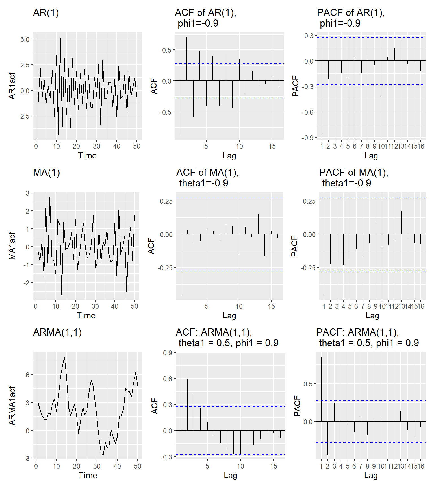

4 Models For Stationary Time Series
In this chapter we will discuss family of autoregressive moving average (ARMA) time series models.
4.1 General Linear Process
A is a time series written as an infinite linear combination of random shocks \{\varepsilon_t\}:
X_t = \mu + \sum_{j=0}^{\infty} \psi_j \, \varepsilon_{t-j},
where,
\mu is the mean
\{\psi_j\} are coefficients (weights)
\varepsilon_t \sim \text{i.i.d. } (0, \sigma^2) are white noise shocks.
4.2 Moving Average Processes
If only finitely many coefficients \psi_j are nonzero, say up to lag q, then we have an MA(q) process:
X_t = \mu + \varepsilon_t + \theta_1 \varepsilon_{t-1} + \dots + \theta_q \varepsilon_{t-q},
where:
\mu is the mean,
\varepsilon_t \sim \text{i.i.d. }(0, \sigma^2) are white noise shocks,
\theta_1, \dots, \theta_q are the MA coefficients.
So we can write:
\text{MA}(q) \subset \text{Linear Process}.
4.3 Autoregressive Processes
Y_t = \alpha + \phi_1 Y_{t-1} + \phi_2 Y_{t-2} + \dots + \phi_p Y_{t-p} + \epsilon_t
Where:
Y_t is the value at time t
\alpha is a constant,
\phi_1, \phi_2,...\phi_p are the parameters,
\epsilon_t is white noise (error term),
p is the order of the AR model.
4.4 AR processes are also just special cases of the general linear process
If the AR process is causal (i.e., roots of the characteristic polynomial lie outside the unit circle), then it can be written as an infinite linear process:
X_t = \sum_{j=0}^{\infty} \psi_j \, \varepsilon_{t-j},
where:
\varepsilon_t \sim \text{i.i.d. }(0, \sigma^2) are white noise shocks,
\psi_j are coefficients determined from the AR parameters.
AR(p) Process as an Infinite Linear Process Using Backshift Operator
Start with the AR(p) process:
X_t = \phi_1 X_{t-1} + \phi_2 X_{t-2} + \dots + \phi_p X_{t-p} + \varepsilon_t,
where \varepsilon_t \sim \text{i.i.d. }(0, \sigma^2) are white noise shocks.
1. Define the backshift operator (B)
B X_t = X_{t-1}, \quad B^2 X_t = X_{t-2}, \dots, B^p X_t = X_{t-p}.
2. Rewrite the AR(p) process using (B)
X_t - \phi_1 B X_t - \phi_2 B^2 X_t - \dots - \phi_p B^p X_t = \varepsilon_t
Factor out X_t:
(1 - \phi_1 B - \phi_2 B^2 - \dots - \phi_p B^p) X_t = \varepsilon_t
Define the AR polynomial:
\phi(B) = 1 - \phi_1 B - \phi_2 B^2 - \dots - \phi_p B^p
Then the AR(p) process becomes:
\phi(B) X_t = \varepsilon_t
3. Express as an infinite linear process
If the AR process is causal (roots of \phi(z)=0 lie outside the unit circle), we can invert the operator:
X_t = \phi(B)^{-1} \varepsilon_t
Expanding gives:
X_t = \sum_{j=0}^{\infty} \psi_j \, \varepsilon_{t-j},
where the coefficients \psi_j are determined recursively from the AR parameters \phi_1, \dots, \phi_p.
This shows that causal AR processes are special cases of the general linear process.
4.5 In-class: Properties of AR(1) process
Derive
Mean
Variance
Covariance
Autocorrelation function of an AR(1) process
4.6 In-class: Properties of AR(2) process
Derive
Mean
Variance
Covariance
Autocorrelation function of an AR(1) process
4.7 In-class: Properties of AR(P) process
Derive
Mean
Variance
Covariance
Autocorrelation function of an AR(P) process
4.8 Properties of AR(1) model
Consider the following AR(1) model.
\begin{equation} Y_t=\phi_0+\phi_1Y_{t-1}+\epsilon_{t} \end{equation}
where {\epsilon_t} is assumed to be a white noise process with mean zero and variance \sigma^2.
Mean
Assuming that the series is weak stationary, we have E(Y_t)=\mu, Var(Y_t)=\gamma_0, and Cov(Y_t, Y_{t-k})=\gamma_k, where \mu and \gamma_0 are constants. Given that {\epsilon_t} is a white noise, we have E(\epsilon_t)=0. The mean of AR(1) process can be computed as follows:
\begin{aligned} E(Y_t) &= E(\phi_0+\phi_1 Y_{t-1}) \\ &= E(\phi_0) +E(\phi_1 Y_{t-1}) \\ &= \phi_0 +\phi_1 E(Y_{t-1}). \\ \end{aligned}
Under the stationarity condition, E(Y_t)=E(Y_{t-1})=\mu. Thus we get
\mu = \phi_0+\phi_1\mu.
Solving for \mu yields
\begin{equation} E(Y_t)=\mu=\frac{\phi_0}{1-\phi_1}. \end{equation}
The results has two constraints for Y_t. First, the mean of Y_t exists if \phi_1 \neq 1 . The mean of Y_t is zero if and only if \phi_0=0.
Variance and the stationary condition of AR (1) process
First take variance of both sides of Equation @ref(eq:ar)
Var(Y_t)=Var(\phi_0+\phi_1 Y_{t-1}+\epsilon_t)
The Y_{t-1} occurred before time t. The \epsilon_t does not depend on any past observation. Hence, cov(Y_{t-1}, \epsilon_t)= 0. Furthermore, {\epsilon_t} is a white noise. This gives
Var(Y_t)=\phi_1^2 Var(Y_{t-1})+\sigma^2.
Under the stationarity condition, Var(Y_t)=Var(Y_{t-1}). Hence,
Var(Y_t)=\frac{\sigma^2}{1-\phi_1^2}.
provided that \phi_1^2 < 1 or |\phi_1| < 1 (The variance of a random variable is bounded and non-negative). The necessary and sufficient condition for the AR(1) model in Equation @ref(eq:ar) to be weakly stationary is |\phi_1| < 1. This condition is equivalent to saying that the root of 1-\phi_1B = 0 must lie outside the unit circle. This can be explained as below
Using the backshift notation we can write AR(1) process as
Y_t = \phi_0 + \phi_1BY_{t} + \epsilon_t.
Then we get
(1-\phi_1B)Y_t=\phi_0 + \epsilon_t. The AR(1) process is said to be stationary if the roots of (1-\phi_1B)=0 lie outside the unit circle.
Covariance
The covariance \gamma_k=Cov(Y_t, Y_{t-k}) is called the lag-k autocovariance of Y_t. The two main properties of \gamma_k: (a) \gamma_0=Var(Y_t) and (b) \gamma_{-k}=\gamma_{k}.
The lag-k autocovariance of Y_t is
\begin{equation} \begin{aligned} \gamma_k &= Cov(Y_t, Y_{t-k}) \\ &= E[(Y_t-\mu)(Y_{t-k}-\mu)] \\ &= E[Y_tY_{t-k}-Y_t\mu-\mu Y_{t-k} +\mu^2] \\ &= E(Y_t Y_{t-k}) - \mu^2. \\ \end{aligned} \end{equation}
Now we have
\begin{equation} E(Y_t Y_{t-k}) = \gamma_k + \mu^2 \end{equation}
Autocorrelation function of an AR(1) process
To derive autocorrelation function of an AR(1) process we first multiply both sides of Equation @ref(eq:ar) by Y_{t-k} and take expected values:
E(Y_tY_{t-k})=\phi_0E(Y_{t-k})+\phi_1 E(Y_{t-1}Y_{t-k})+E(\epsilon_tY_{t-k}) Since \epsilon_t and Y_{t-k} are independent and using the results in Equation @ref(eq:3)
\gamma_k + \mu^2 = \phi_0 \mu+\phi_1(\gamma_{k-1}+\mu^2)
Substituting the results in Equation @ref(eq:2) to Equation @ref(eq:3) we get
\begin{equation} \gamma_k = \phi_1 \gamma_{k-1}. \end{equation}
The autocorrelation function, \rho_k, is defined as
\rho_k = \frac{\gamma_k}{\gamma_0}.
Setting k=1, we get \gamma_1 = \phi_1\gamma_0. Hence,
\rho_1=\phi_1.
Similarly with k=2, \gamma_2 = \phi_1 \gamma_1. Dividing both sides by \gamma_0 and substituting with \rho_1=\phi_1 we get
\rho_2=\phi_1^2.
Now it is easy to see that in general
\begin{equation} \rho_k = \frac{\gamma_k}{\gamma_0}=\phi_1^k \end{equation}
for k=0, 1, 2, 3, ....
Since |\phi_1| < 1, the autocorrelation function is an exponentially decreasing as the number of lags k increases. There are two features in the ACF of AR(1) process depending on the sign of \phi_1. They are,
If 0 < \phi_1 < 1, all correlations are positive.
if -1 < \phi_1 < 0, the lag 1 autocorrelation is negative (\rho_1=\phi_1) and the signs of successive autocorrelations alternate from positive to negative with their magnitudes decreasing exponentially.
4.9 Properties of AR(2) model
Now consider a second-order autoregressive process (AR(2))
\begin{equation} Y_t=\phi_0+\phi_1Y_{t-1}+\phi_2Y_{t-2}+\epsilon_t. \end{equation}
Mean
Question 1: Using the same technique as that of the AR(1), show that
E(Y_t) = \mu = \frac{\phi_0}{1-\phi_1 - \phi_2} and the mean of Y_t exists if \phi_1 + \phi_2 \neq 1.
Variance
Question 2: Show that Var(Y_t) = \frac{(1-\phi_2)\sigma^2}{(1+\phi_2)((1+\phi_2)^2-\phi_1^2)}.
Here is a guide to the solution
Start with
Var(Y_t)=Var(\phi_0+\phi_1Y_{t-1}+\phi_2Y_{t-2}+\epsilon_t)
Solve it until you obtain the Eq. (a) as shown below.
\begin{equation} \gamma_0 (1-\phi_1^2 - \phi_2^2) = 2\phi_1\phi_2\gamma_1+\sigma^2. \end{equation}
Next multiply both sides of Equation @ref(eq:ar2) by Y_{t-1} and obtain an expression for \gamma_1. Let’s call this Eq. (b).
Solve Eq. (a) and (b) for \gamma_0.
Stationarity of AR(2) process
To discuss the stationarity condition of the AR(2) process we use the roots of the characteristic polynomial. Here is the illustration.
Using the backshift notation we can write AR(2) process as
Y_t = \phi_0 + \phi_1 BY_{t} + \phi_2 B^2 Y_{t} + \epsilon_t.
Furthermore, we get
(1-\phi_1 B - \phi_2 B^2) Y_t = \phi_0 + \epsilon_t.
The characteristic polynomial of AR(2) process is
\Phi(B)=1-\phi_1 B - \phi_2 B^2.
and the corresponding AR characteristic equation
1-\phi_1 B - \phi_2 B^2=0.
For stationarity, the roots of AR characteristic equation must lie outside the unit circle. The two roots of the AR characteristic equation are
\frac{\phi_1 \pm \sqrt{\phi_1^2 + 4\phi_2}}{-2\phi_2}
Using algebraic manipulation, we can show that these roots will exceed 1 in modulus if and only if simultaneously \phi_1 + \phi_2 < 1, \phi_2-\phi_1 < 1, and |\phi_2| < 1. This is called the stationarity condition of AR(2) process.
Autocorrelation function of an AR(2) process
To derive autocorrelation function of an AR(2) process we first multiply both sides of Equation @ref(eq:ar2) by Y_{t-k} and take expected values:
\begin{align} E(Y_tY_{t-k}) &= E(\phi_0Y_{t-k}+\theta_1Y_{t-1}Y_{t-k}+\theta_2Y_{t-2}Y_{t-k})+\epsilon_tY_{t-k} \\ &= \phi_0 E(Y_{t-k})+\phi_{1}E(Y_{t-1}Y_{t-k}) + \phi_2 E(Y_{t-2} Y_{t-k}) + E(\epsilon_tY_{t-k}). \end{align}
Using the independence between \epsilon_t and Y_{t-1}, E(\epsilon_t Y_{t-k})=0 and the results in Equation @ref(eq:3) (This is valid for AR(2)) we have
\gamma_k + \mu^2 = \gamma_0 \mu + \theta_1 (\gamma_{k-1}+\mu^2)+\phi_2 (\gamma_{k-2}+\mu^2).
(Note that E(X_{t-1}X_{t-k})=E(X_{t-1}X_{(t-1)-(k-1)}=\gamma_{k-1}))
Solving for \gamma_k we get
\begin{align} \gamma_k=\phi_1\gamma_{k-1}+\phi_2\gamma_{k-2}. \end{align}
By dividing the both sides of Equation @ref(eq:eq9) by \gamma_0, we have
\begin{align} \rho_k=\phi_1\rho_{k-1}+\phi_2\rho_{k-2}. \end{align}
for k>0.
Setting k=1 and using \rho_0=1 and \rho_{-1}=\rho_1, we get the Yule-Walker equation for AR(2) process.
\rho_1=\phi_1+\phi_2 \rho_1 or
\rho_1 = \frac{\phi_1}{1-\phi_2}.
Similarly, we can show that
\rho_2 = \frac{\phi_2(1-\phi_2)+\phi_1^2}{(1-\phi_2)}.
4.10 Properties of AR(p) model
The pth order autoregressive model can be written as
\begin{align} Y_t = \phi_0 + \phi_1Y_{t-1}+\phi_2 Y_{t-2}+ ... + \phi_p Y_{t-p}+\epsilon_t. \end{align}
The AR characteristic equation is
1-\phi_1B-\phi_2B^2-...-\phi_pB^p=0.
For stationarity of AR(p) process, the p roots of the AR characteristic must lie outside the unit circle.
Mean
Question 3: Find E(Y_t) of AR(p) process.
Variance
Question 4: Find Var(Y_t) of AR(p) process.
Autocorrelation function (ACF) of an AR(p) process
Question 5: Similar to the results in Equation @ref(eq:yule2) for AR(2) process, obtain the following recursive relationship for AR(p).
\begin{align} \rho_k = \phi_1\rho_{k-1}+\phi_2 \rho_{k-2} + ... + \phi_p \rho_{k-p}. \end{align}
Setting k=1, 2, ..., p into Equation @ref(eq:yulep) and using \rho_0=1 and \rho_{-k}=\rho_k, we get the Yule-Walker equations for AR(p) process
\begin{equation} \begin{aligned} \rho_1 &= \phi_1+\phi_2 \rho_{1} + ... + \phi_p \rho_{p-1}\\ \rho_2 &= \phi_1 \rho_1+\phi_2 + ... + \phi_p \rho_{p-2}\\ ... \\ \rho_p &= \phi_1 \rho_{p-1} +\phi_2 \rho_{p-2} + ... + \phi_p \\ \end{aligned} \end{equation}
The Yule-Walker equations in @ref(eq:13) can be written in matrix form as below.
\left[\begin{array} {r} \rho_1 \\ \rho_2 \\ .\\ .\\ .\\ \rho_p \end{array}\right] = \left[\begin{array} {rrrrrrr} 1 & \rho_1 & \rho_2 & .&.&.& \rho_{p-1} \\ \rho_1 & 1 & \rho_1 & .&.&.& \rho_{p-2} \\ . & . & . & .&.&.& . \\ . & . & . & .&.&.& . \\ . & . & . & .&.&.& . \\ \rho_{p-1} & \rho_{p-2} & \rho_{p-3} & .&.&.& 1 \\ \end{array}\right] \left[\begin{array} {r} \phi_1 \\ \phi_2 \\ .\\ .\\ .\\ \phi_p \end{array}\right]
or
\bm{\rho_p}=\bm{P_p\phi}.
where,
\bm{\rho_p} = \left[\begin{array} {r} \rho_1 \\ \rho_2 \\ .\\ .\\ .\\ \rho_p \end{array}\right], \bm{P_p} = \left[\begin{array} {rrrrrrr} 1 & \rho_1 & \rho_2 & .&.&.& \rho_{p-1} \\ \rho_1 & 1 & \rho_1 & .&.&.& \rho_{p-2} \\ . & . & . & .&.&.& . \\ . & . & . & .&.&.& . \\ . & . & . & .&.&.& . \\ \rho_{p-1} & \rho_{p-2} & \rho_{p-3} & .&.&.& 1 \\ \end{array}\right], \bm{\phi} = \left[\begin{array} {r} \phi_1 \\ \phi_2 \\ .\\ .\\ .\\ \phi_p \end{array}\right]
The parameters can be estimated using
\bm{\phi}=\bm{P_p^{-1}\rho_p}.
Question 6: Obtain the parameters of an AR(3) process whose first autocorrelations are \rho_1=0.9; \rho_2=0.9; \rho_3=0.5. Is the process stationary?
4.11 The partial autocorrelation function (PACF)
Let \phi_{ki}, the jth coefficient in an AR(k) model. Then, \phi_{kk} is the last coefficient. From Equation @ref(eq:yulep), the \phi_{kj} satisfy the set of equations
\begin{equation} \rho_j=\phi_{k1}\rho_{j-1}+...+\phi_{k(k-1)}\rho_{j-k+1}+\phi_{kk}\rho_{j-k}, \end{equation}
for j=1, 2, ...k, leading to the Yule-Walker equations which may be written
\begin{equation} \left[\begin{array} {r} \rho_1 \\ \rho_2 \\ .\\ .\\ .\\ \rho_k \end{array}\right] = \left[\begin{array} {rrrrrrr} 1 & \rho_1 & \rho_2 & .&.&.& \rho_{k-1} \\ \rho_1 & 1 & \rho_1 & .&.&.& \rho_{k-2} \\ . & . & . & .&.&.& . \\ . & . & . & .&.&.& . \\ . & . & . & .&.&.& . \\ \rho_{k-1} & \rho_{k-2} & \rho_{k-3} & .&.&.& 1 \\ \end{array}\right] \left[\begin{array} {r} \phi_{k1} \\ \phi_{k2} \\ .\\ .\\ .\\ \phi_{kk} \end{array}\right] \end{equation}
or
\bm{\rho_k}=\bm{P_k\phi_k}.
where
\bm{\rho_k} = \left[\begin{array} {r} \rho_1 \\ \rho_2 \\ .\\ .\\ .\\ \rho_k \end{array}\right], \bm{P_k} =\left[\begin{array} {rrrrrrr} 1 & \rho_1 & \rho_2 & .&.&.& \rho_{k-1} \\ \rho_1 & 1 & \rho_1 & .&.&.& \rho_{k-2} \\ . & . & . & .&.&.& . \\ . & . & . & .&.&.& . \\ . & . & . & .&.&.& . \\ \rho_{k-1} & \rho_{k-2} & \rho_{k-3} & .&.&.& 1 \\ \end{array}\right], \bm{\phi_k} = \left[\begin{array} {r} \phi_{k1} \\ \phi_{k2} \\ .\\ .\\ .\\ \phi_{kk} \end{array}\right]
For each k, we compute the coefficients \phi_{kk}. Solving the equations for k=1, 2, 3... successively, we obtain
For k=1,
\begin{equation} \phi_{11}=\rho_1. \end{equation}
For k=2,
\begin{equation} \phi_{22}=\frac{\left[\begin{array} {rr} 1 & \rho_2 \\ \rho_1 & \rho_2 \\ \end{array}\right]}{\left[\begin{array} {rr} 1 & \rho_1 \\ \rho_1 & 1 \\ \end{array}\right]} = \frac{\rho_2-\rho_1^2}{1-\rho_1^2} \end{equation}
For k=3,
\begin{equation} \phi_{33}=\frac{\left[\begin{array} {rrr} 1 & \rho_1 & \rho_1 \\ \rho_1 & 1 & \rho_2 \\ \rho_2 & \rho_1 & \rho_3 \\ \end{array}\right]}{\left[\begin{array} {rrr} 1 & \rho_1 & \rho_2 \\ \rho_1 & 1 & \rho_1 \\ \rho_2 & \rho_1 & 1 \\ \end{array}\right]} \end{equation}
The quantity \phi_{kk} is called the partial autocorrelation at lag k and can be defined as \phi_{kk}=Corr(Y_tY_{t-k}|Y_{t-1}, Y_{t-2},..., Y_{t-k+1}). The partial autocorrelation between Y_t and Y_{t-k} is the correlation between Y_t and Y_{t-k} after removing the effect of the intermediate variables Y_{t-1}, Y_{t-2}, ..., Y_{t-k+1}.
In general the determinant in the numerator of Equations @ref(eq:p1), @ref(eq:p2) and @ref(eq:p3) has the same elements as that in the denominator, but replacing the last column with \bm{\rho_k}= (\rho_1, \rho_2,...\rho_k).
PACF for AR(1) models
From Equation @ref(eq:acfar1) we have
\rho_k=\phi_1^k for k=0, 1, 2, 3,...
Hence, for k=1, the first partial autocorrelation coefficient is
\phi_{11}=\rho_1=\phi_1. From @ref(eq:p2) for k=2, the second partial autocorrelation coefficient is
\phi_{22}=\frac{\rho_2-\rho_1^2}{1-\rho_1^2}=\frac{\phi_1^2-\phi_1^2}{1-\phi_1^2} = 0.
Similarly, for AR(1) we can show that \phi_{kk}=0 for all k > 0. Hence, for AR(1) process the partial autocorrelation is non-zero for lag 1 which is the order of the process, but is zero for lags beyond the order 1.
PACF for AR(2) model
Question 7: For AR(2) process show that \phi_{kk}=0 for all k>2. Sketch the PACF of AR(2) process.
PACF for AR(P) model
In general for AR(p) precess, the partial autocorrelation function \phi_{kk} is non-zero for k less than or equal to p (the order of the process) and zero for all k greater than p. In other words, the partial autocorrelation function of a AR(p) process has a cut-off after lag p.
4.12 Moving average (MA) models
We first derive the properties of MA(1) and MA(2) models and then give the results for the general MA(q) model.
4.13 Properties of MA(1) model
The general form for MA(1) model is
\begin{equation} Y_t = \theta_0 + \theta_1 \epsilon_{t-1} + \epsilon_t \end{equation}
where \theta_0 is a constant and {\epsilon_t} is a white noise series.
Mean
Question 8: Show that E(Y_t) = \theta_0.
Variance
Question 9: Show that Var(Y_t) = (1+\theta_1^2)\sigma^2.
We can see both mean and variance are time-invariant. MA models are finite linear combinations of a white noise sequence. Hence, MA processes are always weakly stationary.
Autocorrelation function of an MA(1) process
Method 1
To obtain the autocorrelation function of MA(1), we first multiply both sides of Equation @ref(eq:ma1) by Y_{t-k} and take the expectation.
\begin{equation} \begin{aligned} E[Y_tY_{t-k}] &= E[\theta_0 Y_{t-k} + \theta_1 \epsilon_{t-1} Y_{t-k} + \epsilon_t Y_{t-k}]\\ &= \theta_0 E(Y_{t-k}) + \theta_1 E(\epsilon_{t-1}Y_{t-k}) + E(\epsilon_t Y_{t-k})\\ \end{aligned} \end{equation}
Using the independence between \epsilon_t and Y_{t-k} (future error and past observation) E(\epsilon_t Y_{t-k}) = 0. Now we have
\begin{equation} E[Y_tY_{t-k}] = \theta_0^2 + \theta_1 E(\epsilon_{t-1}Y_{t-k}) \end{equation}
Now let’s obtain an expression for E[Y_t Y_{t-k}].
\begin{equation} \begin{aligned} \gamma_k &= Cov(Y_t, Y_{t-k}) \\ &= E[(Y_t-\theta_0)(Y_{t-k}-\theta_0)] \\ &= E[Y_tY_{t-k}-Y_t\theta_0-\theta_0 Y_{t-k} +\theta_0^2] \\ &= E(Y_t Y_{t-k}) - \theta_0^2. \\ \end{aligned} \end{equation}
Now we have
\begin{equation} E(Y_t Y_{t-k}) = \gamma_k + \theta_0^2. \end{equation}
Using the Equations @ref(eq:ma1acfs2) and @ref(eq:covma1) we have
\begin{equation} \gamma_k = \theta_0^2 - \theta_0^2 + \theta_1E(\epsilon_{t-1}Y_{t-k}). \end{equation}
Now let’s consider the case k=1.
\begin{equation} \gamma_1 = \theta_0^2 - \theta_0^2 + \theta_1E(\epsilon_{t-1}Y_{t-1}) \end{equation}
Today’s error and today’s value are dependent. Hence, E(\epsilon_{t-1}Y_{t-1}) \neq 0. We first need to identify E(\epsilon_{t-1}Y_{t-1}).
\begin{equation} \begin{aligned} E(\epsilon_{t-1}Y_{t-1}) &= E(\theta_0 \epsilon_{t-1} + \theta_1 \epsilon_{t-2} \epsilon_{t-1}+ \epsilon_{t-1}^2)\\ \end{aligned} \end{equation}
Since, {\epsilon_t} is a white noise process E(\epsilon_{t-1}) = 0 and E(\epsilon_{t-2} \epsilon_{t-1}) = 0. Hence, we have
\begin{equation} \begin{aligned} E(\epsilon_{t-1}Y_{t-1}) &= E(\epsilon_{t-1}^2)=\sigma^2\\ \end{aligned} \end{equation}
Substituting @ref(eq:covma5) in @ref(eq:covma3) we get
\gamma_1=\theta_1\sigma^2.
Furthermore, \gamma_0 = Var(Y_t)= (1+\theta_1^2)\sigma^2. Hence
\rho_1=\frac{\gamma_1}{\gamma_0}=\frac{\theta}{1+\theta_1^2}.
When k=2, from Equation @ref(eq:covma3) and E(\epsilon_{t-1}Y_{k-2}) = 0 (future error and past observation) we get \gamma_2=0. Hence \rho_2=0. Similarly, we can show that
\gamma_k = \rho_k=0 for all k \geq 2.
We can see that the ACF of MA(1) process is zero, beyond the order of 1 of the process.
Method 2: By using the definition of covariance
\begin{equation} \begin{aligned} \gamma_1 = Cov(Y_t, Y_{t-1}) &= Cov(\epsilon_t + \theta_1 \epsilon_{t-1}+ \theta_0, \epsilon_{t-1}+\theta_1 \epsilon_{t-2} + \theta_0)\\ &=Cov(\theta_1 \epsilon_{t-1}, \epsilon_{t-1})\\ &=\theta_1 \sigma^2. \end{aligned} \end{equation}
\begin{equation} \begin{aligned} \gamma_2=Cov(Y_t, Y_{t-2}) &= Cov(\epsilon_t + \theta_1 \epsilon_{t-1}+ \theta_0, \epsilon_{t-2}+\theta_1 \epsilon_{t-3} + \theta_0)\\ &=0. \end{aligned} \end{equation}
We have \gamma_0=\sigma^2(1+\theta_1^2), (Using the variance).
Hence
\rho_1=\frac{\gamma_1}{\gamma_0}=\frac{\theta_1}{1+\theta_1^2}.
Similarly we can show \gamma_k=\rho_k=0 for all k \geq 2.
4.14 Properties of MA(2) model
An MA(2) model is in the form
\begin{equation} Y_t = \theta_0 + \theta_1 \epsilon_{t-1} + \theta_2 \epsilon_{t-2} + \epsilon_t \end{equation}
where \theta_0 is a constant and {\epsilon_t} is a white noise series.
Mean
Question 10: Show that E(Y_t) = \theta_0.
Variance
Question 11: Show that Var(Y_t) = \sigma^2 (1+\theta_1^2 + \theta_2^2).
Autocorrelation function of an MA(2) process
Question 12: For MA(2) process show that,
\rho_1=\frac{\theta_1(1+\theta_2)}{1+\theta_1^2+\theta_2^2}, \rho_2 = \frac{\theta_2}{1+\theta_1^2 + \theta_2^2},
and \rho_k=0 for all k \geq 3.
4.15 Properties of MA(q) model
\begin{equation} Y_t = \theta_0 + \theta_1 \epsilon_{t-1} + \theta_2 \epsilon_{t-2} +...+ \theta_q \epsilon_{t-q} +\epsilon_t \end{equation}
where \theta_0 is a constant and {\epsilon_t} is a white noise series.
Mean
Question 13: Show that the constant term of an MA model is the mean of the series (i.e. E(Y_t)=\theta_0).
Variance
Question 14: Show that the variance of an MA model is Var(Y_t)=(1+\theta_1^2+\theta_2^2+...+\theta_q^2)\sigma^2.
Autocorrelation function of an MA(q) process
Question 15: Show that the autocorrelation function of a MA(q) process is zero, beyond the order of q of the process. In other words, the autocorrelation function of a moving average process has a cutoff after lag q.
4.16 Partial autocorrelation function of an MA(q) process
The partial autocorrelation functions for MA(q) models behave very much like the autocorrelation functions of AR(p) models. The PACF of MA models decays exponentially to zero, rather like ACF for AR model.
4.17 Dual relation between AR and MA process
Dual relation 1
First we consider the relation AR(p) <–> MA(\infty)
Let AR(p) be a stationary AR model with order p. Then,
Y_t = \phi_1Y_{t-1}+ \phi_2Y_{t-2}+...+ \phi_pY_{t-p}+\epsilon_t, where \epsilon_t \sim WN(0, \sigma^2).
Using the backshift operator we can write the AR(p) model as
(1-\phi_1B-\phi_2B^2-...-\phi_pB^P)Y_t=\epsilon_t. Then
\phi(B)Y_t=\epsilon_t, where \phi(B)=1-\phi_1B-\phi_2B^2-...-\phi_pB^p. Furthermore, Y_t can be written as infinite sum of previous \epsilon’s as below
Y_t = \phi^{-1}(B)\epsilon_t, where \phi(B)\psi(B)=1 and \psi(B)=1+\Psi_1B+\psi_2B^2+... Then Y_t=\psi(B)\epsilon_t. This is a representation of MA(\infty) process.
Next, we consider the relation MA(q) <–> AR(\infty)
Let MA(q) be invertible moving average process
Y_t = \epsilon_t + \theta_t\epsilon_{t-1}+\theta_2\epsilon_{t-2}+...+\theta_p\epsilon_{t-q}.
Using the backshift operator we can write the MA(q) process as
Y_t = (1+\theta_1B+\theta_2B^2-...+\theta_qB^q)\epsilon_t.
Then,
Y_t = \theta(B)\epsilon_t,
where \theta(B)=1+\theta_1B+\theta_2B^2+...+\theta_1B^q. Hence, for an invertible moving average process, Y_t can be represented as a finite weighted sum of previous error terms, \epsilon. Furthermore, since the process is invertible \epsilon_t can be represented as an infinite weighted sum of previous Y’s as below
\epsilon_t=\theta^{-1}(B)Y_t, where \pi(B)\theta(B)=1, and \pi(B) = 1+\pi_1B+\pi B^2+.... Hence,
\epsilon_t = \pi(B)Y_t. This is an representation of a AR(\infty) process.
Dual relation 2
An MA(q) process has an ACF function that is zero beyond lag q and its PACF is decays exponentially to 0. Consequently, an AR(p) process has an PACF that is zero beyond lag-p, but its ACF decays exponentially to 0.
Dual relation 3
For an AR(p) process the roots of \phi(B)=0 must lie outside the unit circle to satisfy the condition of stationarity. However, the parameters of the AR(p) are not required to satisfy any conditions to ensure invertibility. Conversely, the parameters of the MA process are not required to satisfy any condition to ensure stationarity. However, to ensure the condition of invertibility, the roots of \theta(B)=0 must lie outside the unit circle.
4.18 Autoregressive and Moving-average (ARMA) models
current value = linear combination of past values + linear combination of past error + current error
The ARMA(p, q) can be written as
Y_t=c+\phi_1 Y_{t-1}+\phi_2 Y_{t-2}+...+\phi_p Y_{t-p}+\theta_1\epsilon_{t-1}+\theta_2\epsilon_{t-2}+...+\theta_q\epsilon_{t-q}+\epsilon_t, where \{\epsilon_t\} is a white noise process.
Using the back shift operator
\phi(B)Y_t=\theta(B)\epsilon_t, where \phi(.) and \theta(.) are the pth and qth degree polynomials,
\phi(B)=1-\phi_1 \epsilon -...-\phi_p \epsilon^p, and \theta(B)=1+\theta_1\epsilon+...+\theta_q\epsilon^q.
4.19 Stationary condition
Roots of \phi(B)=0 lie outside the unit circle.
4.20 Invertible condition
Roots of \theta(B)=0 lie outside the unit circle.
4.21 Autocorrelation function and Partial autocorrelation function
The ACF of an ARMA model exhibits a pattern similar to that of an AR model. The PACF of ARMA process behaves like the PACF of a MA process. Hence, the ACF and PACF are not informative in determining the order of an ARMA model.
4.22 Theoretical ACF and PACF for AR, MA and ARMA models
Theoretical autocorrelation coefficients for some of the more common AR, MA and ARMA models are shown here. However, the ACF and PACF calculated from the data will not exactly match any set of theoretical ACF and PACF because the ACF and PACF calculated from the data are subject to sampling variation.
4.23 ACF and PACF calculated from data
4.24 References
Box, G. E., Jenkins, G. M., Reinsel, G. C., & Ljung, G. M. (2015). Time series analysis: forecasting and control.